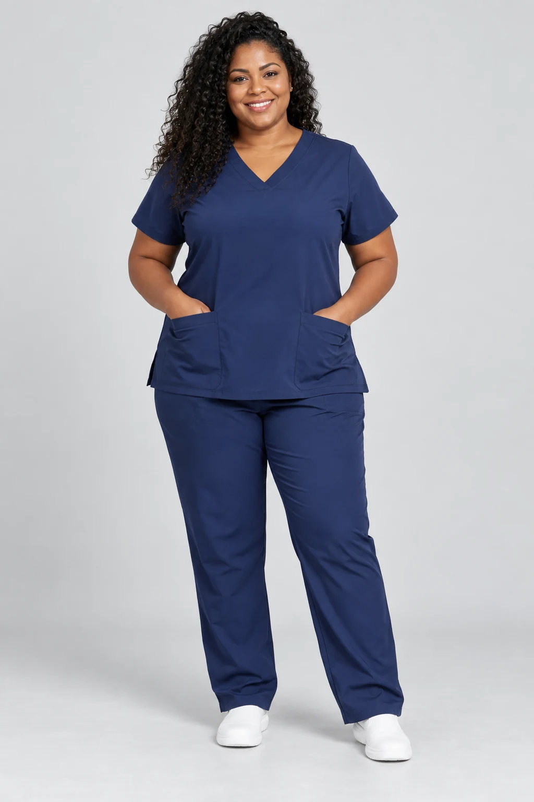

MODELO 01
Gola padre
Gola padre com abertura frontal e calça jogger.
PARA LOJISTAS, CLÍNICAS E HOSPITAIS
Nós cuidamos da produção. Você escolhe a grade, as cores e os detalhes que fazem sentido para o seu negócio.

ESCOLHA SUA MODELAGEM
Quatro direções de modelagem. Escolha a que combina com sua marca ou equipe e conte o resultado que você procura.
Gola padre com abertura frontal e calça jogger.
Decote V, mangas curtas e calça reta.
Decote V com calça jogger e barra ajustada.
Manga japonesa e calça reta com bolso cargo.
Conte o que você imagina. Vamos avaliar as possibilidades para sua marca ou equipe.
A gola padre é uma referência enviada. As demais imagens são ilustrativas; a gola redonda é uma proposta para avaliação. Regular e Plus size têm medidas próprias. A peça piloto confirma sua versão.
A PRODUÇÃO COMEÇA PELA SUA DEMANDA
Cada negócio precisa de uma grade diferente. Nós alinhamos o pedido com você antes de cortar.
VOCÊ VENDE. NÓS PRODUZIMOS.
Produza com a sua etiqueta e escolha uma versão que faça sentido para o seu público. Cores, grade e detalhes são alinhados dentro dos modelos que já trabalhamos.
UMA EQUIPE. UMA IDENTIDADE.
Organize a demanda da clínica por profissional, setor e tamanho. Alinhamos a peça piloto e as cores antes de formalizar a produção.
VOLUME COM PLANEJAMENTO.
Leve a demanda por setor para a conversa. Confirmamos tecido, grade, quantidade e capacidade de produção antes de assumir o pedido.
A Marconi cuida dos bastidores para você.
Planejar minha produçãoANTES DE FECHAR O PEDIDO
A foto ajuda a escolher uma direção. A peça piloto e a ficha aprovada definem o que será produzido.
Oferecemos Oxford, tactel, gabardine, microfibra e helanca. Cada opção combina toque, peso, caimento e flexibilidade de um jeito. Mesmo com nomes parecidos, os artigos podem apresentar resultados diferentes conforme o fornecedor, a gramatura, a construção e o acabamento. Escolhemos o tecido pelo resultado que você procura e confirmamos na amostra e na peça piloto.
Regular e Plus size têm tabelas próprias, com medidas diferentes. As duas grades podem ser produzidas nos mesmos tecidos. Escolha a tabela da sua grade, compare com uma peça de bom caimento e avalie a peça piloto antes de fechar o pedido.
Gola, bolsos, cós, barra e etiquetas entram no alinhamento. Escolha os detalhes dentro das possibilidades do modelo e confirme na peça piloto.
Há opções com boa conservação da cor e resistência à deformação e à formação de bolinhas. Esse desempenho depende do artigo, do acabamento e dos cuidados de lavagem. A presença de elastano acrescenta flexibilidade. Para uso institucional, alinhamos o tecido ao protocolo de lavagem da unidade.
ESCOLHA SUA GRADE COM MAIS CLAREZA
Regular e Plus size têm medidas diferentes e podem usar os mesmos tecidos. Escolha a tabela correspondente à sua grade e compare os valores com uma blusa que veste bem.
BLUSA / P ao GG
| Medida | P34/36 | M38/40 | G42/44 | GG44/48* |
|---|---|---|---|---|
| Busto | 53 | 55 | 58 | 62 |
| Cintura | 50 | 53 | 56 | 60 |
| Comprimento | 69 | 71 | 72 | 75 |
* A equivalência informada para GG é 44/48. Confirme essa referência antes de definir a grade.
BLUSA / G1 ao G5
| Medida | G148/50 | G252/54 | G356/58 | G460/62 | G564/66 |
|---|---|---|---|---|---|
| Busto | 64 | 66 | 68 | 71 | 74 |
| Cintura | 63 | 65 | 67 | 70 | 73 |
| Comprimento | 78 | 80 | 82 | 84 | 86 |
Os valores acima são medidas da blusa, não do corpo. Cada grade tem sua própria tabela; as opções de tecido atendem tanto Regular quanto Plus size. As medidas das calças serão alinhadas antes da produção.
SEM PULAR ETAPAS
Trabalhamos a partir de 300 peças por modelo. Esse volume permite organizar material, corte e costura dentro da nossa estrutura.
Modelo, cores, grade, quantidade e uso. Avaliamos se o pedido cabe na nossa produção.
Alinhamos caimento, detalhes e tecido antes de formalizar o pedido.
O preço combinado é mantido até a entrega. Após formalizar o pedido, você paga 50% de sinal. Os outros 50% são pagos na saída.
Material, costura e revisão ficam com a Marconi. Saldo na saída e nota fiscal. Depois, planejamos a próxima demanda.
VAMOS ORGANIZAR O SEU LOTE
Escolha uma modelagem e conte o que você espera do seu scrub. Com seu objetivo e a grade desejada, alinhamos uma proposta para sua marca ou equipe.
300 peças por modelo
Cores e tamanhos distribuídos no mesmo lote, conforme viabilidade.
50% de sinal
Após formalizar o pedido. Saldo de 50% na saída.
Orçamento antes do compromisso
Quantidade, preço e prazo são confirmados antes da formalização.
CONVERSA CLARA, PEDIDO BEM FEITO
300 peças por modelo. A distribuição de cores e tamanhos será avaliada para organizar o lote. Esse mínimo ajuda a encaixar o pedido na estrutura de produção.
Produzimos sob demanda. O prazo depende do tecido, do volume, da grade e da disponibilidade de produção. Ele é acordado na formalização do pedido.
Sim. A Marconi trabalha no bastidor, com a etiqueta da sua marca. Cor, gola e detalhes são alinhados dentro dos modelos trabalhados, para que cada negócio tenha sua versão.
Os produtos de linha têm peça piloto. Converse com a Marconi sobre o envio e as condições para avaliar o modelo antes de fechar a produção.
O orçamento considera modelo, tecido, detalhes e grade. Após formalizar o pedido, você paga 50% de sinal e os outros 50% na saída. O preço aprovado no pedido é mantido até a entrega.
O nome identifica uma família de tecidos. Dois artigos chamados gabardine, por exemplo, podem ter toque, peso e caimento diferentes. Fornecedor, gramatura, construção e acabamento também influenciam a espessura, a flexibilidade e o comportamento nas lavagens. Por isso, alinhamos o resultado que você procura e avaliamos a amostra e a peça piloto antes de produzir.
Sim. Oxford, tactel, gabardine, microfibra e helanca são opções para as duas grades. Regular e Plus size têm medidas diferentes: consulte a tabela correspondente. O tecido escolhido define o toque, o peso, o caimento e a flexibilidade da peça.
Informe a grade plus que você precisa. A disponibilidade de cada tamanho e suas medidas será confirmada na modelagem e na peça piloto, antes de fechar o pedido.
A gola padre usa uma referência enviada; as demais imagens são ilustrativas. A opção de gola redonda é um conceito para avaliação da Marconi. Regular e Plus size têm tabelas de medidas diferentes e compartilham as opções de tecido. A peça piloto e a ficha aprovada confirmam o caimento, os detalhes e as cores do lote.
A compatibilidade depende do tecido aprovado e das exigências da instituição. Informe o uso e o protocolo de lavagem na solicitação. Não oferecemos neste catálogo certificação de EPI ou propriedades antimicrobianas.
Para lojistas, usamos suas informações de venda para planejar a próxima grade. Para equipes, consideramos a próxima demanda por setor e tamanho. Cada lote tem orçamento e prazo próprios.
UM PARCEIRO PARA A PRÓXIMA PRODUÇÃO